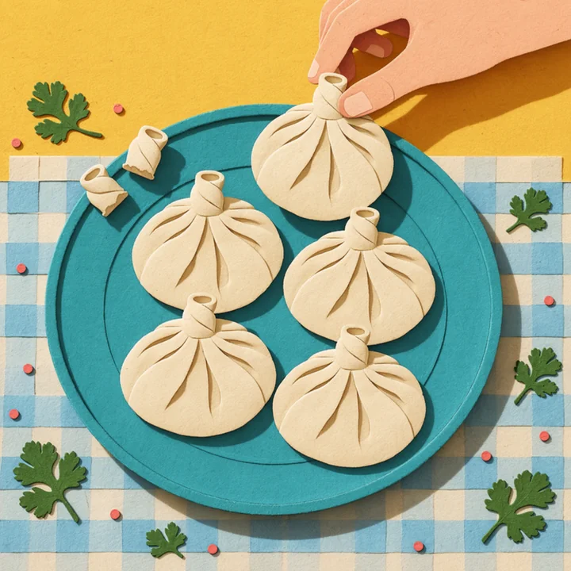
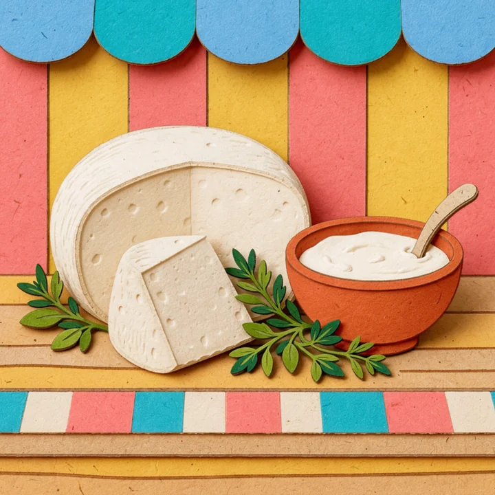
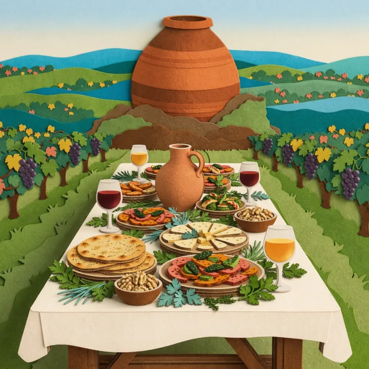

- Cheese varieties (Wikipedia)
- over 250
- Winemaking history (Wikipedia)
- at least 8,000 years
- Usual length of travellers' diarrhoea
- 3–4 days
- Emergency number
- 112
This page is about Georgian food in Georgia the country, not the US state. Checked on 21 November 2026.
Traditional Georgian food: what to try first
Begin with khachapuri and khinkali. According to Wikipedia, khachapuri, a cheese-filled bread, is Georgia's national dish, with its own day on 27 February, and over 250 varieties of cheese are produced in the country.
The table lists Georgian dishes with facts from the encyclopedia articles in our sources; others you may see on menus, such as chakapuli, ajapsandali and satsivi, are not described here. For the capital's districts and sights, see our Tbilisi guide.
| Dish | What it is | What to check |
|---|---|---|
| Khachapuri | Imeretian (Imeruli), the most popular form: yeast dough with white salted Imeretian cheese | Pasteurisation not stated |
| Adjarian khachapuri | Boat-shaped, with cheese, butter and an egg yolk in the middle | The egg: see below |
| Khinkali | Twisted dumplings stuffed with meat, fish or vegetables and spices | Filling goes in uncooked; ask for them hot |
| Mtsvadi | Meat cooked on fire, listed under Kakheti | Ask for it hot |
| Kharcho | Soup with beef, rice, cherry plum purée and chopped walnuts | Walnuts, "not compulsory" |
| Chakhokhbili | Stewed chicken and tomato with fresh herbs | — |
| Lobio | Beans with coriander, walnuts, garlic and onion, hot or cold, sometimes served with mchadi, a cornbread | Walnuts |
| Pkhali | Minced vegetables with ground walnuts, vinegar, garlic and herbs; usually spinach, beetroot and white beans | Walnuts |
| Badrijani nigvziani | Fried aubergine with spiced walnut and garlic paste, often with pomegranate seeds | Walnuts |
| Sulguni | Brined, sour, moderately salty and elastic, from the Samegrelo region; often deep-fried | Pasteurisation not stated; see the health advice |
| Matsoni | Fermented milk; a protected geographical indication since 24 January 2012 | Pasteurisation not stated |
| Tkemali | Pungently tart cherry plum sauce for grilled meat, poultry and potatoes | — |
| Churchkhela | Candle-shaped sweet of nuts on a string dipped in grape concentrate | Nuts |
Adjarian khachapuri and the egg
Adjarian khachapuri is the boat-shaped one in the table. According to Wikipedia, the hot pie is topped with a raw egg yolk and a pat of butter before serving.
What the sources leave out. The articles we used do not discuss any risk from the egg; the Government of Canada's general rule is "cook it".
How to eat khinkali
According to Wikipedia, the etiquette is to use your bare hands: bite, suck out the juices, and leave the tough top on the plate.
Why there is juice. The dumpling comes from the eastern mountains. Its meat filling goes in uncooked, so the juices of the meat are trapped inside as it cooks; you take them with the first bite.
The top. The "k'udi", or "tail", goes to the plate so that those eating can count; a fork is considered incorrect or childish.
Fillings. Kalakuri, the city style, adds parsley and coriander; mushrooms, potatoes or cheese may replace the meat. The same article says the version from Pasanauri is regarded as superior to that from other towns.

Vegetarian dishes and sweets
Without meat, look at lobio, pkhali and badrijani nigvziani in the table. Meatless dumplings are commonly eaten during Orthodox fasts.
Something sweet. Churchkhela is walnuts or hazelnuts on a string, dipped in thickened grape concentrate called badagi. The sweets "contain many calories".
Georgian cheese and raw milk: the health advice
Official travel-health advice is to avoid unpasteurized cheese and other raw milk products. TravelHealthPro's country page is direct: "Travellers should not eat or drink any unpasteurised milk products." The CDC notes this matters most for pregnant women and people with a weakened immune system; its advice is general, not country-specific.
What we do not know. Sulguni (also spelled suluguni) is brined and a "quick cheese" maturing in just one or two days. Our sources do not state which Georgian cheeses use pasteurised milk, and we do not guess.
Our tip: if it matters to you, for example in pregnancy, ask the seller or read the label before you buy.
Raw-milk cheese and brucellosis
This infection usually comes from unpasteurised dairy. In the WHO's words, "most cases are caused by the consumption of raw milk or its derivatives such as fresh cheese".
Symptoms. The WHO describes "flu-like symptoms, including fever, weakness, malaise and weight loss", with an incubation period "from 1 week to 2 months, but usually 2–4 weeks". It calls pasteurisation of milk "an important step to preventing transmission".
Local data. We found no official figures for the country, so this page gives none.
Another dairy risk. TravelHealthPro notes that tick-borne encephalitis occasionally follows unpasteurised dairy from infected animals, but adds for this country: "Human cases of TBE have not been reported." It also notes a lack of data and that the country borders one that reports human cases.

Can you drink tap water in Georgia?
The UK government lists "varying water quality – bottled water is widely available" among the country's health risks. The Government of Canada and the CDC do not rate it. We add no verdict of our own.
General advice, not country-specific.
- Brush your teeth with bottled or disinfected water.
- Disinfect it by boiling, filtering or chemical treatment; a rolling boil works.
- Skip ice where clean supplies are limited.
- Drinks in unopened, factory-sealed cans or bottles "generally can be considered safe", and steaming-hot tea and coffee are "also usually safe".
In the capital. Our Tbilisi guide covers it in detail.
Bottled water and Borjomi
Besides Borjomi, local brands include Nabeghlavi, Likani and Sairme.
At the source. Naturally carbonated, it rises from springs in the Borjomi Gorge and reaches the surface at 38–41 °C. Who should go easy on it is covered in our guide to Borjomi mineral water.
Food safety rules for travellers
The Government of Canada's rule is "Boil it, cook it, peel it, or leave it", and UK travel-health advice adds that such precautions "do not offer full protection". Here is how general advice suggests lowering the risk.
- Usually advised: freshly cooked dishes served piping hot, and fruit you can peel.
- Take care with: salads, uncooked fruit and vegetables, anything left uncovered in warm places such as buffets, unpasteurised dairy, and raw or undercooked meat, fish or shellfish.
- Hands: wash them after the toilet and always before eating.
Other health risks are in our Georgia safety guide.
![Infographic headed "Food and water: what travel-health advice says", with two columns of four cards each and no icons. A line above the heading reads: TravelHealthPro, GOV.UK and CDC general advice, not a rating of Georgian food, checked 21 Nov 2026. Usually advised: sealed bottles and cans; steaming-hot tea and coffee; food served piping hot; fruit you can peel. Take care: tap water, "varying water quality" (GOV.UK); unpasteurised milk and cheese; salads and raw vegetables; street food unless cooked in front of you and served hot](../assets/img/georgian-food/water-food-careful-mob.webp)
Street food and buffets
TravelHealthPro advises against anything from street traders unless it is thoroughly cooked in front of you and served hot. The CDC adds: avoid raw vegetables and eat dishes cooked and steaming hot.
Hepatitis A and typhoid vaccines
Both spread through contaminated food and water, and TravelHealthPro advises vaccination.
Hepatitis A. The CDC recommends the vaccine for "unvaccinated travelers one year old or older going to Georgia". The Government of Canada notes a risk of the disease there and recommends vaccination for all travellers to areas where it is present.
Typhoid. The vaccine is recommended for most travellers, particularly frequent or long-stay ones visiting areas where sanitation and food hygiene are likely to be poor.
Food poisoning and travellers' diarrhoea: symptoms, treatment, when to see a doctor
"Travellers' diarrhea is the most common illness that affects travellers," the Government of Canada states. It typically occurs during the first week and is often self-limiting, lasting three to four days, according to TravelHealthPro.
How common. The same factsheet puts it at over 20 percent of those who travel to high-risk destinations, without listing which countries those are.
On a city trip. Our Kutaisi guide gives the same official advice in the context of a city break.
Symptoms
The NHS lists feeling or being sick, diarrhoea, tummy pain, a high temperature and feeling generally unwell.
Travellers' diarrhoea defined. It is "three or more unformed stools in a 24-hour period", often with fever, nausea, vomiting or cramps.
Travelers' diarrhea treatment: fluids first
"The most important thing is to have lots of fluids to avoid dehydration," the NHS advises.
At your accommodation. Rest and take small sips, skip fruit juice and fizzy drinks, and take paracetamol if you're in discomfort. The NHS adds: "do not give children under 12 medicine to stop diarrhoea".
Dehydration. Watch for thirst, dark yellow pee, a dry mouth and sunken eyes; a pharmacist can recommend oral rehydration solutions. Without sachets, TravelHealthPro gives "six level teaspoons of sugar and half a teaspoon of salt to one litre of 'safe' water".
Medicine from a pharmacist. The NHS mentions loperamide, not for children under 12; for adults, TravelHealthPro caps it at two days and rules it out with blood in the stool, a high temperature or severe tummy pain. Ask a pharmacist or doctor first; what you can buy over the counter is in our guide to bringing medication to Georgia.
When to see a doctor
Get help if you cannot keep fluids down, see blood, or symptoms have not improved within three days.
NHS. UK readers are told to call 111, or 999 in an emergency; in Georgia, dial 112. Reasons for urgent help include:
- you keep being sick and cannot keep fluid down;
- bloody diarrhoea or bleeding from the bottom;
- diarrhoea for more than 7 days or vomiting for more than 2 days;
- worry about a baby under 12 months.
Georgia has no 111 line. The NHS treats these as needing help now, so see a doctor without waiting.
TravelHealthPro. Seek medical care if symptoms do not improve within three days. Go immediately with a fever of 38°C or more, blood and/or mucus in the stool, altered mental status, severe abdominal pain, jaundice or rash.
Emergencies. The NHS lists vomiting blood or something like ground coffee, a sudden, severe headache or tummy ache, and a stiff neck. For these, GOV.UK advises asking for an ambulance; see our ambulance guide.
Cost. The Government of Canada warns that "immediate up-front cash payment is often required". GOV.UK advises: "Contact your insurance company quickly if you're referred to a medical facility for treatment."
A specialist. For a stomach problem that can wait, you can browse gastroenterologists in Georgia on 100doc.ge.

The supra, wine and drinks
A Georgian supra is the traditional feast, always led by a tamada, or toastmaster, and only the tamada proposes a toast.
Table manners. Eating is entirely appropriate during toasts, but talking is frowned upon; guests raise their glasses but do not drink until the speech ends. Supra traditions entered the national list of intangible heritage in 2017.
Georgian wine. According to Wikipedia, wine has been made in the country for at least 8,000 years, and Kakheti holds 75% of its vineyards. The same source describes qvevri as egg-shaped earthenware vessels buried below ground or set into cellar floors, and notes that UNESCO added the traditional method of making qvevri wine to its list of intangible cultural heritage in 2013. For tastings, see our Sighnaghi guide and Telavi.
Chacha. This clear pomace brandy runs from 40% alcohol commercially to 85% home-brewed.
Our tip: home-made spirit strength varies, so take small sips; read about drink spiking and home-made spirits first.

Frequently asked questions
Can you drink tap water in Georgia?
Is the egg in khachapuri raw?
What do health agencies say about raw milk and cheese?
What should I do if I get food poisoning in Georgia?
Drink lots of fluids in small sips and rest, the NHS advises. See a doctor if you cannot keep fluids down, if there is blood, or if diarrhoea lasts more than a week or vomiting more than 2 days. TravelHealthPro advises care if symptoms do not improve within three days, and at once with a fever of 38°C or more or blood in the stool. In an emergency, dial 112.
How long does travellers' diarrhoea last?
Do I need a hepatitis A vaccine for Georgia?
What should I try first in Georgia?
Sources
- Wikipedia: Khachapuri (secondary source) ↑
- Wikipedia: Georgian cuisine (secondary source) ↑
- Wikipedia: Khinkali (secondary source) ↑
- Wikipedia: Kharcho (secondary source) ↑
- Wikipedia: Chakhokhbili (secondary source) ↑
- Wikipedia: Lobio (secondary source) ↑
- Wikipedia: Pkhali (secondary source) ↑
- Wikipedia: Nigvziani badrijani (secondary source) ↑
- Wikipedia: Churchkhela (secondary source) ↑
- Wikipedia: Sulguni (secondary source) ↑
- Wikipedia: Georgian cheese (secondary source) ↑
- Wikipedia: Matsoni (secondary source) ↑
- Wikipedia: Tkemali (secondary source) ↑
- Wikipedia: Chacha (secondary source) ↑
- Wikipedia: Georgian wine (secondary source) ↑
- Wikipedia: Kvevri (secondary source) ↑
- Wikipedia: Supra (secondary source) ↑
- Wikipedia: Tamada (secondary source) ↑
- Wikipedia: Borjomi (secondary source) ↑
- GOV.UK travel advice for Georgia: health ↑
- Government of Canada: travel advice for Georgia ↑
- CDC: travel health for Georgia ↑
- CDC: safe food and water ↑
- TravelHealthPro: Georgia ↑
- TravelHealthPro: food and water hygiene ↑
- TravelHealthPro: travellers' diarrhoea ↑
- NHS: food poisoning ↑
- NHS: dehydration ↑
- WHO: brucellosis fact sheet ↑
This guide is general information, not medical advice: the doctor decides on your care.